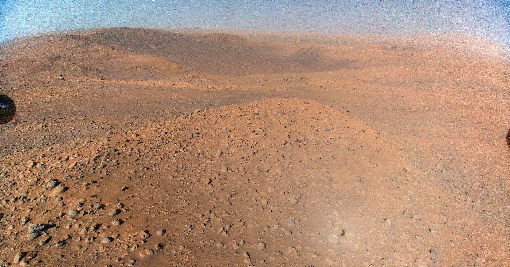

Mars en Nasa
Er is bewijs dat NASA Mars-foto's bewerkt om de planeet meer buitenaards te laten lijken, mogelijk om de publieke interesse te vergroten of om een mysterieuzer beeld te scheppen. Sommigen suggereren dat deze bewerkingen de werkelijkheid van Mars verhullen om de opinie over bemande missies te beïnvloeden. In werkelijkheid toont een niet-bewerkte foto van Mars, zoals deze afbeelding, een subtiele blauwe tint in de atmosfeer, wat de planeet een minder mysterieuze uitstraling geeft.
